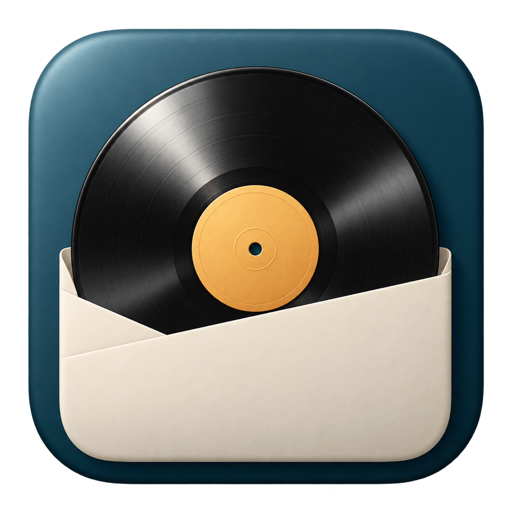
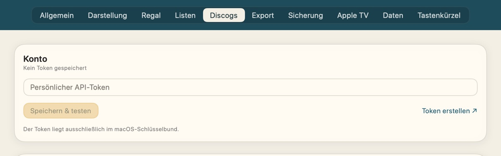
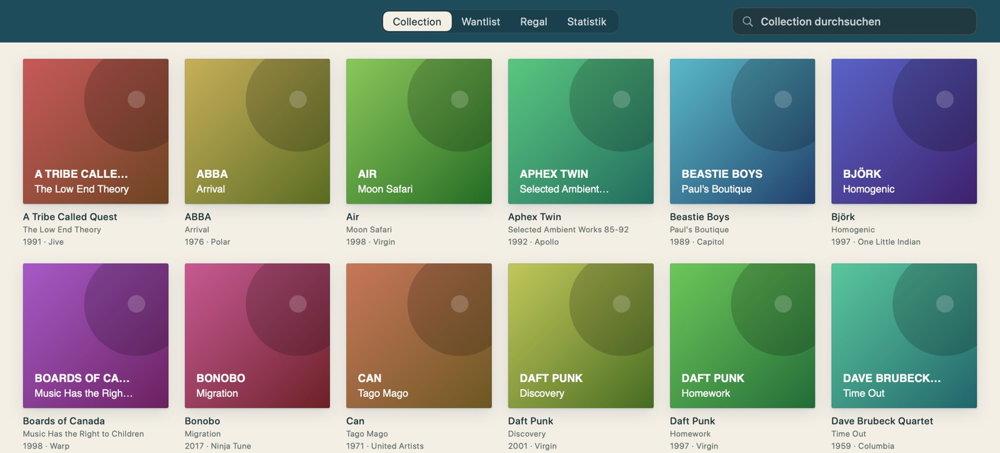
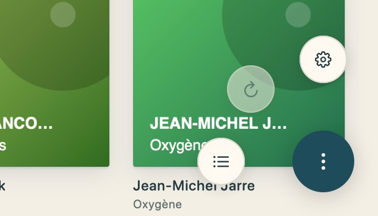
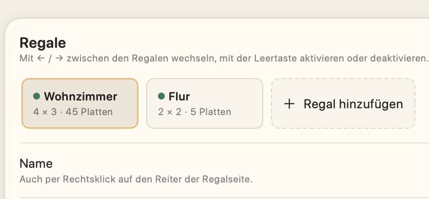
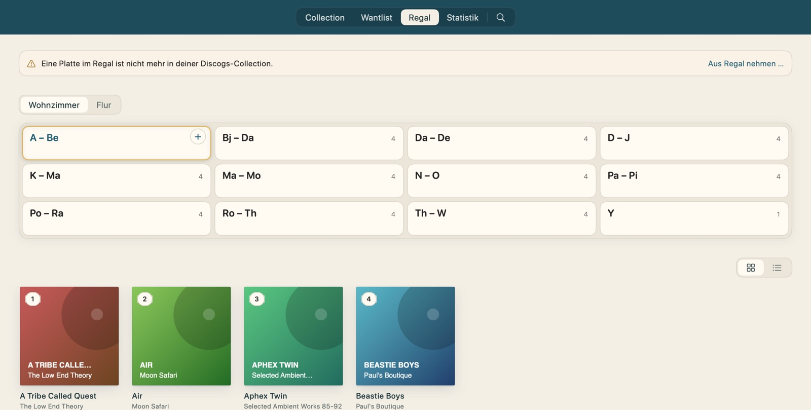
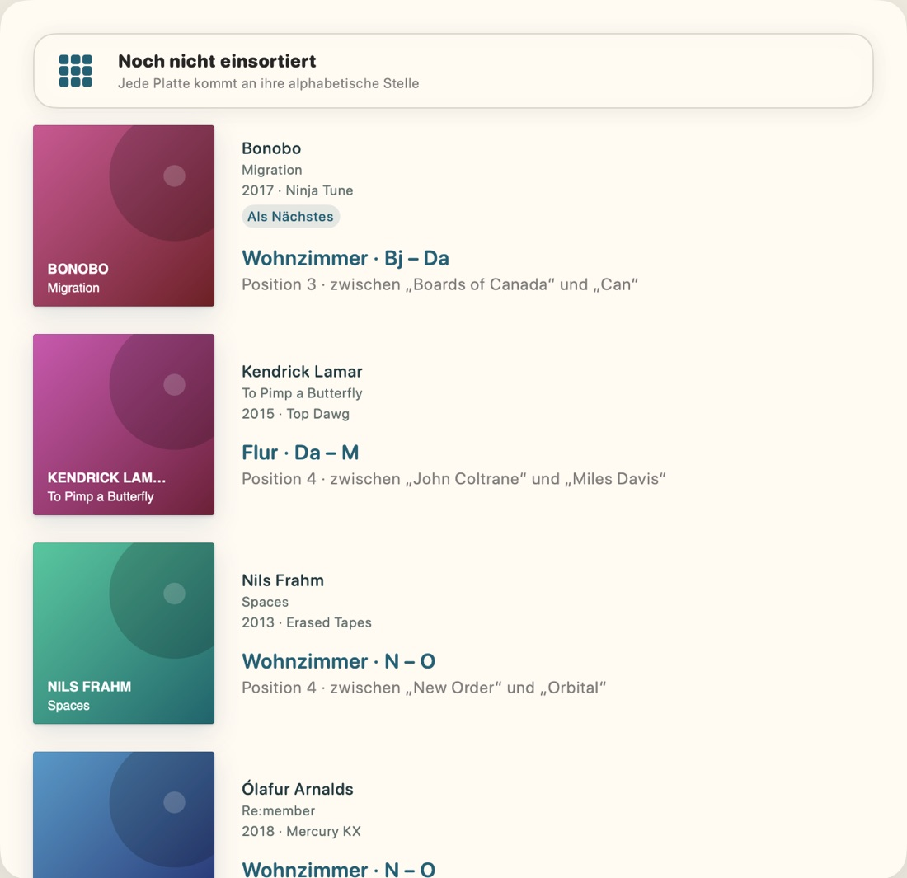
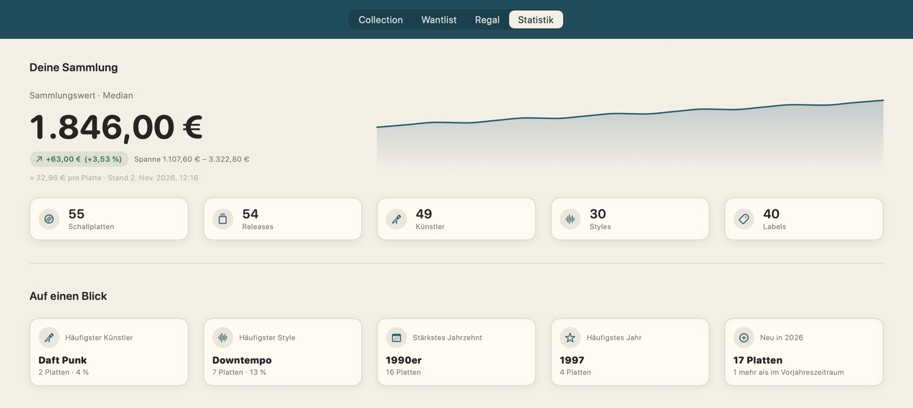
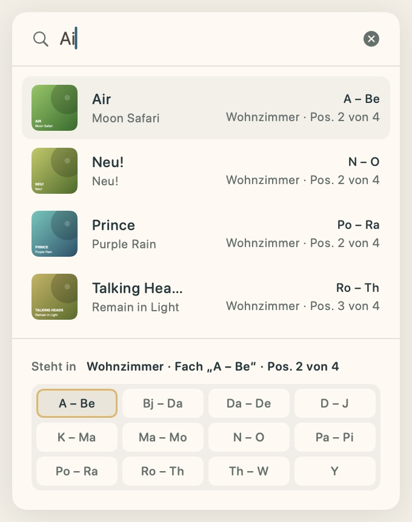

Plattenregal holt deine Collection und deine Wantlist aus Discogs – und merkt sich, in welchem Regal, in welchem Fach und an welcher Stelle jede Platte steht.
Dazu gibt es eine Suche direkt aus der Menüleiste, eine Statistik mit dem Wert deiner Sammlung, eine Suchliste für Platten, die gerade nicht aufzufinden sind, eine Verkaufsliste, Sicherungen deiner Regalbelegung und Exporte als CSV oder PDF. Dieses Handbuch führt dich in ein paar Minuten vom Installieren bis zum ersten eingeräumten Regal.
Plattenregal ist eine private App und nicht bei Apple notarisiert. Deshalb hält macOS den ersten Start an, wenn du die App aus dem Internet, per AirDrop oder Mail bekommen hast. Das löst du einmalig so:
Danach startet Plattenregal wie jede andere App.
Ziehe die neue Version genauso in „Programme“ und lass die alte ersetzen. Deine Sammlung, deine Regale und dein Token bleiben erhalten, denn sie liegen nicht in der App selbst. Fragt macOS danach, ob Plattenregal auf deinen Schlüsselbund zugreifen darf, wähle Immer erlauben: Dort liegt dein Discogs-Token. Unter Umständen ist auch der Schritt mit „Dennoch öffnen“ noch einmal nötig. Ob es eine neue Version gibt, prüft Plattenregal einmal am Tag selbst und meldet sich dann mit einem Fenster samt Download; von Hand geht es über Plattenregal → Nach Updates suchen …
Plattenregal legt keine Platten selbst an. Alles, was du siehst, stammt aus deinem Discogs-Konto. Für den Zugriff brauchst du einen persönlichen Token, eine Art Schlüssel für die Discogs-Schnittstelle. Plattenregal liest damit nur und ändert bei Discogs nichts.

Er liegt ausschließlich im Schlüsselbund von macOS, nur auf diesem Mac. Er steht nie in Dateien, Einstellungen oder im Protokoll. Im Internet spricht Plattenregal nur mit Discogs und, für die Suche nach Updates, mit GitHub, immer verschlüsselt. Der Token geht dabei nur an Discogs.
Die Begrüßung beim ersten Start führt mit Token eintragen … direkt zum Feld. Demo starten … öffnet stattdessen eine Beispielsammlung mit rund 50 Alben. Dort darfst du alles verändern, nichts wird gespeichert. Später: Hilfe → Erste Schritte

Alle deine Platten als Cover-Raster oder Liste. Ein Klick aufs Cover zeigt Angaben und Tracklist, ein Klick auf einen Track öffnet ihn auf YouTube.
Was du noch suchst, direkt aus deiner Discogs-Wantlist.
Deine Regale mit ihren Fächern und welche Platten wo stehen.
Sammlungswert, Verlauf und Verteilungen nach Künstlern, Styles, Jahren.
Die Lupe am Ende der Rubriken oben (⌘F) klappt das Suchfeld auf. Es findet Platten nach Interpret, Titel, Label, Katalognummer, Genre, Style und mehr. esc leert die Suche. Auf der Regalseite zeigt die Suche direkt, in welchem Fach eine Platte steht.
Ein Rechtsklick auf ein Cover bietet an, die Platte im Regal zu zeigen, einen Platz für sie zu finden oder sie auf Discogs zu öffnen.

Aktualisieren geht auch mit ⌘R oder indem du mit zwei Fingern auf dem Trackpad nach unten ziehst.
Plattenregal kennt dein echtes Regal nicht von selbst. Du legst es einmal an, in den Größen von IKEA KALLAX oder ganz eigen mit 1 bis 6 Spalten und Reihen. Mehrere Regale, etwa im Wohnzimmer und im Flur, sind kein Problem.


Die Fächer benennt Plattenregal selbst nach dem Buchstabenbereich, der darin steht, etwa „A – Be“. Ein Klick wählt ein Fach. Darunter stehen seine Platten in ihrer Reihenfolge, als Cover oder als Liste. Ein Klick auf ein Cover öffnet „Exemplar bearbeiten“, dort verschiebst du die Platte mit einem Regler an eine andere Position.

Der runde +-Knopf unten rechts auf der Regalseite listet alle Platten, die noch keinen Platz haben, alphabetisch nach Interpret. Bei jeder steht, wo sie hingehört. Stell die Platte ins echte Regal und klick auf die Zeile, dann merkt sich Plattenregal den Platz.
Willst du gezielt ein Fach füllen, fahre mit dem Zeiger darüber und klicke auf das kleine + oben rechts im Fach.
Rechtsklick auf ein Fach → Sortierung prüfen. Plattenregal zeigt die wenigsten Handgriffe, die das Fach wieder in Ordnung bringen, Schritt für Schritt zum Abhaken. Immer nach Interpret, bei gleichem Interpreten wahlweise nach Titel, Jahr oder Label.
Platten, die nie ins Regal sollen, etwa Singles in einer Kiste, markierst du per Rechtsklick als Ohne Regalplatz. Dann bietet Plattenregal sie nicht mehr zum Einsortieren an.
Eine Platte ist gerade nicht zu finden? Per Rechtsklick Auf die Suchliste setzen. Im Fach trägt sie dann das Etikett „Gesucht“. Unter Einstellungen → Listen hakst du sie als gefunden ab.
Mit Zum Verkauf vormerken sammelst du Platten, die gehen dürfen. Sie bleiben, wo sie stehen. Verkauft unter Einstellungen → Listen nimmt sie alle auf einmal aus den Fächern.

Die Statistik zeigt den Wert deiner Sammlung nach den Preisen auf dem Discogs-Marktplatz und wie er sich entwickelt. Dazu kommen Zahlen zu Künstlern, Styles, Labels und Jahrzehnten sowie ein Zufallsfund, der dir mit ⇧⌘R eine Platte aus deiner Sammlung vorschlägt. Aktualisieren geht mit ⌘R.
Die Platten selbst kommen jederzeit wieder aus Discogs. Wo sie im Regal stehen, gibt es nur auf deinem Mac. Darum sichert Plattenregal die Belegung automatisch nach jeder Änderung. Unter Einstellungen → Sicherung kannst du einen eigenen Ordner wählen, zum Beispiel in iCloud Drive. Dort holst du einen älteren Stand auch zurück und siehst vorher, was sich ändert.
Unter Einstellungen → Export machst du aus Collection, Wantlist oder Verkaufsliste eine CSV-Datei für Excel und Numbers oder eine druckfertige PDF-Liste, nach Regal oder alphabetisch geordnet. Auf Wunsch schreibt Plattenregal sie täglich, wöchentlich oder monatlich in einen Ordner.
Plattenregal muss dafür nicht vorn sein. Ein Klick auf die kleine Schallplatte oben in der Menüleiste oder ⌥ Leertaste öffnet ein Suchfeld über allem, was gerade offen ist, auch über anderen Apps.
Schon nach ein paar Buchstaben stehen die Treffer da, jeweils mit Fach, Regal und Position. Das Fach des gewählten Treffers leuchtet unten im Regal im Kleinen golden auf. Ein Klick hält den Treffer fest, so gehst du in Ruhe zum Regal. esc leert das Feld, ein zweites Mal schließt es die Suche.
Nach ⌘Q läuft Plattenregal ohne Symbol im Dock weiter, damit die Suche jederzeit da ist. Ganz beenden: ⌥⌘Q oder Rechtsklick auf die Schallplatte. Lage und Aussehen der Suche wählst du unter Einstellungen → Allgemein, dort lässt sich alles auch ausschalten.

Die Einstellungen öffnest du mit ⌘, oder über den runden Knopf. Unter Darstellung wählst du zwischen den Designs Modern mit Liquid Glass und Klassisch wie in diesem Handbuch.
| Reiter | Was du dort findest |
|---|---|
| Allgemein | Sprache (Deutsch oder Englisch), Startseite, Start bei der Anmeldung, Menüleiste und Hintergrund, Updates, Demo |
| Darstellung | Design, Hell oder Dunkel, Farben, Raster oder Liste, Covergröße |
| Regal | Regale anlegen und ändern, Fächer sperren, Sortierung und Beschriftung |
| Listen | Suchliste und Verkaufsliste ein- oder ausschalten und abarbeiten |
| Discogs | Token, Verbindungstest, Synchronisierung |
| Export | CSV oder PDF, automatischer Export in einen Ordner |
| Sicherung | Belegung sichern und wiederherstellen, automatische Sicherung, Speicherort |
| Apple TV | Plattenregal für Apple TV verbinden, Discogs-Token mitschicken |
| Daten | Speicherplatz, Cover-Cache, Protokoll, Zurücksetzen |
| Tastenkürzel | Alle Kürzel zum Nachschlagen |
| Du siehst | Das hilft |
|---|---|
| „Plattenregal“ nicht geöffnet | Einmal über Datenschutz & Sicherheit erlauben, siehe Seite 3. |
| Token nicht angenommen | Den Token auf Discogs prüfen oder neu erzeugen und unter Einstellungen → Discogs neu eintragen. |
| Frage nach dem Schlüsselbund | Kommt nach einem Update vor. Immer erlauben wählen. |
| „Plattenregal ist bereits geöffnet“ | Die App läuft schon ein zweites Mal. Die andere beenden, deine Daten sind davon nicht betroffen. |
| Platte fehlt in der Collection | Neu bei Discogs Hinzugefügtes erscheint nach dem nächsten Abgleich: ⌘R. |
| Platte des Tages auf dem Schreibtisch | Rechtsklick auf den Schreibtisch → Widgets bearbeiten → Platte des Tages. Ein Klick darauf zeigt die Platte im Regal. |
| Regal versehentlich geleert | Unter Einstellungen → Sicherung einen älteren Stand der Belegung wiederherstellen. |
| Ganz von vorn anfangen | Einstellungen → Daten → Zurücksetzen. Vorher sichert Plattenregal die Belegung, Sicherungen bleiben erhalten. |
Einen Fehler melden: Unter Einstellungen → Daten → Diagnose sicherst du das Protokoll mit Sichern unter … in eine Datei. Leg die Version aus Plattenregal → Über Plattenregal dazu. Das Protokoll enthält nie deinen Discogs-Token.
Plattenregal 1.0.0 · von Patrice Werner · für macOS 27 auf Macs mit Apple-Chip.
Deine Daten bleiben auf deinem Mac. Plattenregal spricht nur mit Discogs und, für Updates, mit GitHub und sendet nichts über dich an Dritte.
This application uses Discogs’ API but is not affiliated with, sponsored or endorsed by Discogs. ‘Discogs’ is a trademark of Zink Media, LLC.